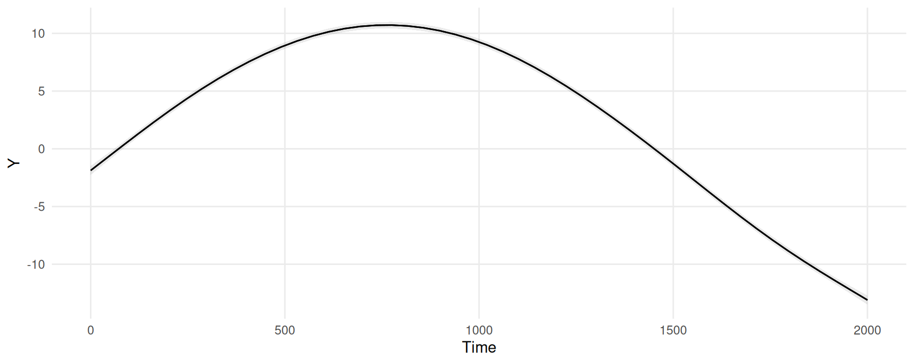
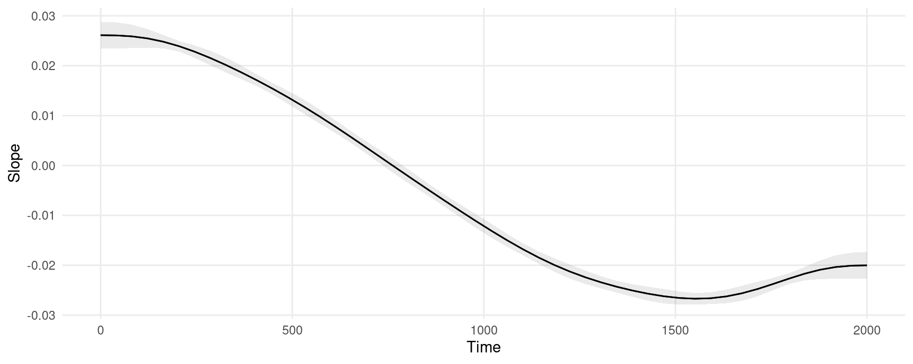

library(marginaleffects)
library(itsadug)
library(mgcv)
simdat$Subject <- as.factor(simdat$Subject)
dim(simdat)
#> [1] 75600 6
head(simdat)
#> Group Time Trial Condition Subject Y
#> 1 Adults 0.00000 -10 -1 a01 0.7554469
#> 2 Adults 20.20202 -10 -1 a01 2.7834759
#> 3 Adults 40.40404 -10 -1 a01 1.9696963
#> 4 Adults 60.60606 -10 -1 a01 0.6814298
#> 5 Adults 80.80808 -10 -1 a01 1.6939195
#> 6 Adults 101.01010 -10 -1 a01 2.3651969GAM
Estimate a Generalized Additive Model
We will estimate a GAM model using the mgcv package and the simdat dataset distributed with the itsadug package:
Fit a model with a random effect and group-time smooths:
model <- bam(Y ~ Group + s(Time, by = Group) + s(Subject, bs = "re"),
data = simdat)
summary(model)
#>
#> Family: gaussian
#> Link function: identity
#>
#> Formula:
#> Y ~ Group + s(Time, by = Group) + s(Subject, bs = "re")
#>
#> Parametric coefficients:
#> Estimate Std. Error t value Pr(>|t|)
#> (Intercept) 2.0574 0.6903 2.980 0.00288 **
#> GroupAdults 3.1265 0.9763 3.202 0.00136 **
#> ---
#> Signif. codes: 0 '***' 0.001 '**' 0.01 '*' 0.05 '.' 0.1 ' ' 1
#>
#> Approximate significance of smooth terms:
#> edf Ref.df F p-value
#> s(Time):GroupChildren 8.26 8.850 3649 <2e-16 ***
#> s(Time):GroupAdults 8.66 8.966 6730 <2e-16 ***
#> s(Subject) 33.94 34.000 569 <2e-16 ***
#> ---
#> Signif. codes: 0 '***' 0.001 '**' 0.01 '*' 0.05 '.' 0.1 ' ' 1
#>
#> R-sq.(adj) = 0.609 Deviance explained = 61%
#> fREML = 2.3795e+05 Scale est. = 31.601 n = 75600Adjusted Predictions: predictions() and plot_predictions()
Compute adjusted predictions for each observed combination of regressor in the dataset used to fit the model. This gives us a dataset with the same number of rows as the original data, but new columns with predicted values and uncertainty estimates:
pred <- predictions(model)
dim(pred)
#> [1] 75600 12
head(pred)
#>
#> Estimate Std. Error z Pr(>|z|) S 2.5 % 97.5 %
#> -1.874 0.199 -9.41 <0.001 67.4 -2.2643 -1.4834
#> -1.346 0.182 -7.41 <0.001 42.8 -1.7025 -0.9901
#> -0.819 0.167 -4.90 <0.001 20.0 -1.1467 -0.4916
#> -0.293 0.156 -1.88 0.0605 4.0 -0.5988 0.0129
#> 0.231 0.149 1.55 0.1204 3.1 -0.0606 0.5232
#> 0.753 0.146 5.17 <0.001 22.0 0.4675 1.0379
#>
#> Columns: rowid, estimate, std.error, statistic, p.value, s.value, conf.low, conf.high, Y, Group, Time, Subject
#> Type: responseWe can easily plot adjusted predictions for different values of a regressor using the plot_predictions() function:
plot_predictions(model, condition = "Time")
Marginal Effects: slopes() and plot_slopes()
Marginal effects are slopes of the prediction equation. They are an observation-level quantity. The slopes() function produces a dataset with the same number of rows as the original data, but with new columns for the slop and uncertainty estimates:
mfx <- slopes(model, variables = "Time")
head(mfx)
#>
#> Term Estimate Std. Error z Pr(>|z|) S 2.5 % 97.5 %
#> Time 0.0261 0.00137 19.1 <0.001 267.8 0.0234 0.0288
#> Time 0.0261 0.00136 19.2 <0.001 270.3 0.0234 0.0288
#> Time 0.0261 0.00133 19.5 <0.001 280.0 0.0235 0.0287
#> Time 0.0260 0.00128 20.3 <0.001 301.1 0.0235 0.0285
#> Time 0.0259 0.00120 21.5 <0.001 339.6 0.0235 0.0282
#> Time 0.0257 0.00109 23.5 <0.001 404.2 0.0236 0.0279
#>
#> Columns: rowid, term, estimate, std.error, statistic, p.value, s.value, conf.low, conf.high, predicted_lo, predicted_hi, predicted, Y, Group, Time, Subject
#> Type: responseWe can plot marginal effects for different values of a regressor using the plot_slopes() function. This next plot shows the slope of the prediction equation, that is, the slope of the previous plot, at every value of the Time variable.
plot_slopes(model, variables = "Time", condition = "Time")
The marginal effects in this plot can be interpreted as measuring the change in Y that is associated with a small increase in Time, for different baseline values of Time.
Excluding terms
The predict() method of the mgcv package allows users to “exclude” some smoothing terms, using the exclude argument. You can pass the same argument to any function in the marginaleffects package:
predictions(model, newdata = "mean", exclude = "s(Subject)")
#>
#> Estimate Std. Error z Pr(>|z|) S 2.5 % 97.5 % Group Time Subject
#> 11.7 0.695 16.9 <0.001 210.8 10.4 13.1 Adults 1000 a01
#>
#> Columns: rowid, estimate, std.error, statistic, p.value, s.value, conf.low, conf.high, Group, Time, Subject, Y
#> Type: responseSee the documentation in ?mgcv:::predict.bam for details.